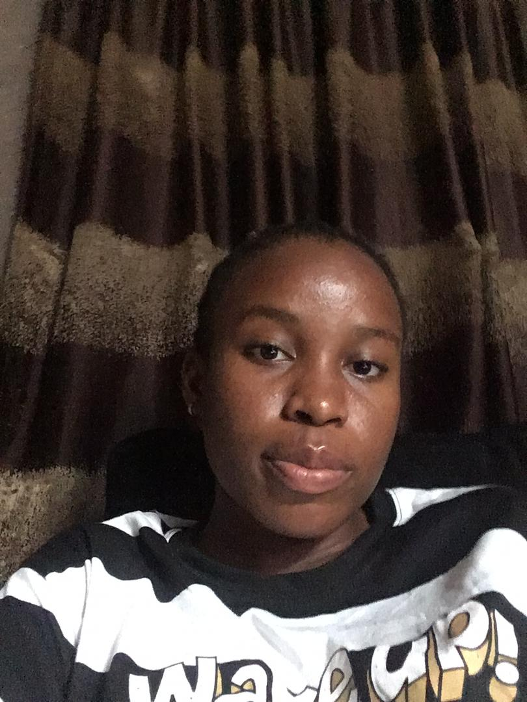

My profile

My name is Whitney Ebuh. I am nineteen years old. I am a student Of the University of the People(Uop).
My favorite food is Fufu and Afang soup. I am a christian. I am from Akwa Ibom state.
Still I Rise By Maya Angelou
You may write me down in history
With your bitter, twisted lies,
You may trod me in the very dirt
But still, like dust, I'll rise.
Does my sassiness upset you?
Why are you beset with gloom?
’Cause I walk like I've got oil wells
Pumping in my living room.
Just like moons and like suns,
With the certainty of tides,
Just like hopes springing high,
Still I'll rise.
Did you want to see me broken?
Bowed head and lowered eyes?
Shoulders falling down like teardrops,
Weakened by my soulful cries?
Does my haughtiness offend you?
Don't you take it awful hard
’Cause I laugh like I've got gold mines
Diggin’ in my own backyard.
You may shoot me with your words,
You may cut me with your eyes,
You may kill me with your hatefulness,
But still, like air, I’ll rise.
Does my sexiness upset you?
Does it come as a surprise
That I dance like I've got diamonds
At the meeting of my thighs?
Out of the huts of history’s shame
I rise
Up from a past that’s rooted in pain
I rise
I'm a black ocean, leaping and wide,
Welling and swelling I bear in the tide.
Leaving behind nights of terror and fear
I rise
Into a daybreak that’s wondrously clear
I rise
Bringing the gifts that my ancestors gave,
I am the dream and the hope of the slave.
I rise
I rise
I rise.
whitneyebuh